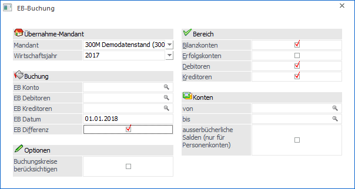
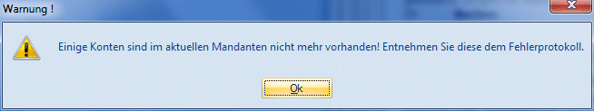

Bei Eröffnungsbuchungen muss zwischen zwei Kategorien der Eröffnung eines Wirtschaftsjahres einer Firma unterschieden werden:
ü Erstanlage einer neuen Buchhaltung (z.B. Umstellung von einer manuellen Buchhaltung auf WinLine FIBU)
ü Wirtschaftsjahreswechsel: Eröffnungsbuchungen, die jährlich nach Durchführung des Jahreswechsels vorzunehmen sind.
Erstanlage-Buchungen: Bei der Erstanlage von Firmendaten in WinLine FIBU müssen die aktuellen Salden der Ausgangsbuchhaltung in WinLine FIBU vorgetragen werden. Bei der Vorgangsweise muss unterschieden werden zwischen
ü der Eröffnung von Sachkonten
ü der Eröffnung von Personenkonten
Eröffnungsbuchungen für Sachkonten
Eröffnungen für Sachkonten werden mit der Buchungsart EB gebucht
Ø Funktion der Buchungsart EB
Umsatzsteuer-Schlüssel bleiben unberücksichtigt. Buchungen, die mit dem Buchungsschlüssel EB durchgeführt wurden, können auf Auswertungen getrennt ausgewiesen werden.
Eröffnungsbuchungen für Personenkonten
Personenkonten sind in WinLine FIBU hauptbücherliche Konten. Die Eröffnungsbuchungen für Personenkonten werden für jedes Personenkonto inkl. des Vortrages der Offenen-Posten-Daten vorgenommen.
Achtung
Die Eröffnung für Personenkonten muss bei Ersteinrichtung der Firmendaten unbedingt mit dem Buchungsschlüssel KF bzw. DF vorgenommen werden.
Bei der Erfassung der Offenen Posten-Daten (Fakturen) wählt der Anwender zwischen zwei Alternativen:
Ø Detaillierte Fakturen-Eröffnung
Der Gesamt-Saldo-Vortrag eines Personenkontos wird mit dem Buchungsschlüssel DF/KF gebucht. Pro offene Faktura wird die Fakturennummer mit Zahlungskonditionen gespeichert. Diese Form der Eröffnung wird empfohlen.
Vorteil:
Die detaillierte Erfassung der Fakturen liefert übersichtliche Daten für die Mahnung und Kreditoren-Zahlungen.
Nachteil:
Die detaillierte Erfassung der Daten verursacht einen höheren Erfassungsaufwand.
Ø Komprimierte Fakturen-Eröffnung
Der Saldo des Debitors/Kreditors wird mit dem Buchungsschlüssel DF/KF gebucht - der gesamte Saldo wird mit einer fiktiven Fakturennummer (z.B. 1997) eröffnet.
Vorteil:
Die komprimierte Fakturen-Eröffnung verursacht nur geringen Erfassungsaufwand.
Nachteil:
Die komprimierte Fakturen-Eröffnung bietet jedoch für die weiteren Offenen Posten Informationen wenig Details.
Eröffnungsbuchungen bei Wirtschaftsjahreswechsel
Nach Durchführung des Jahreswechsels müssen die Eröffnungssalden in das neue Wirtschaftsjahr vorgetragen werden. Die Konten sowie die Offenen Posten des alten Wirtschaftsjahres werden beim Jahreswechsel in das neue Wirtschaftsjahr vorgetragen. Die Daten des alten Wirtschaftsjahres sind die Basis für die Eröffnungsbuchungen im neuen Jahr. Die Eröffnungsbuchungen können
ü automatisch oder
ü manuell
in das neue Jahr vorgetragen werden. Bei der automatischen EB-Übernahme werden die Buchungen im Buchungsstapel "-13 Eröffnungsbuchungen" gespeichert und können anschließend im Menü "Buchen Dialog Stapel" abgesetzt werden.
Hinweis
Die EB-Übernahme kann beliebig oft durchgeführt werden, da das Programm erkennt, welcher Saldo schon als "EB" in die Periode "0" im aktuellen Jahr übernommen und verbucht wurde (bzw. eröffnet wurde) - und übernimmt daher bei nochmaliger Durchführung der EB-Übernahme nur mehr die Differenzen, die sich seit der letzten Übernahme ergeben haben.
Achtung
Das Programm berücksichtigt nur EB-Buchungen, die auch tatsächlich gebucht wurden. Kontrollieren Sie also vor einer neuerlichen EB-Übernahme, ob der Stapel "-13 Eröffnungsbuchungen" noch vorhanden ist und somit die EB-Buchungen noch abgesetzt werden müssen.
Manuelle Eröffnungsbuchungen
Alle Konten sind ausschließlich als Sachkonten zu eröffnen, da die Offenen Posten automatisch (im Zuge des Jahreswechsels) in das neue Wirtschaftsjahr vorgetragen wurden. Die Eröffnungsbuchungen erfolgen im Normalfall nur automatisch mit dem Buchungsschlüssel EB.
Automatische Eröffnungsbuchungen
Die automatische Eröffnung von Konten erfolgt durch Anwahl des Menüpunktes
1 Abschluss
1 EB-Buchung
Die Kontenbereiche, für welche automatische Eröffnungen durchgeführt werden sollen, werden vom Anwender festgelegt. Die Eröffnung kann stufenweise - getrennt für Kontenbereiche - erfolgen.

Achtung
Achten Sie darauf, dass sowohl im aktuellen als auch im Vorjahresmandanten die Währungen im Mandantenstamm hinterlegt sind. Ist dies nicht der Fall, kommt es zu einer Fehlermeldung.
Ø Mandant
Auswahl des Mandanten, aus dem die EB-Werte gebildet werden sollen.
Ø Wirtschaftsjahr
Auswahl des Wirtschaftsjahres aus dem die EB-Buchungen erstellt werden sollen.
Ø EB-Konten
Eingabe der Gegenkonten für die Bildung der Eröffnungsbuchungszeilen. Für Debitoren, Kreditoren und Sachkonten können jeweils eigene Gegenkonten definiert werden. Die Eingabe des Gegenkontos wird durch Drücken der RETURN- oder der Tabulator-Taste bestätigt. Das Programm prüft, ob das angegebene Konto in der Zielbuchhaltung vorhanden ist.
Ø EB-Datum
Es wird das Tagesdatum vorgeschlagen, das beim Mandantenwechsel bzw. beim Programmeinstieg eingegeben wurde. Mit diesem Datum werden die Eröffnungsbuchungen erzeugt.
Ø EB-Differenz
Wird das Häkchen gesetzt, so wird der Saldo des zuvor ausgewählten Jahres mit dem bereits gebuchten EB-Wert des aktuellen Jahres verglichen und daraus der Differenzbetrag ermittelt und gebucht. Gespeicherte Buchungsstapel mit EB-Buchungen werden dabei nicht berücksichtigt.
Bei nicht setzen dieser Option wird der Saldo des gewählten Jahres als EB-Buchung abgestellt. Es erfolgt kein Abgleich mit dem aktuellen EB-Wert.
In den folgenden Eingabefeldern wird der Umfang des Übernahmelaufes festgelegt. Der Übernahmelauf für Eröffnungssalden kann beliebig oft für unterschiedliche Kontenbereiche wiederholt werden.
Ø Buchungskreise berücksichtigen
Bei aktivierter Checkbox werden die EB-Buchungen aufgrund der Buchungskreise erzeugt. Ist die Checkbox nicht aktiviert, werden die EB-Buchungen erstellt und dem Buchungskreis aus der Buchungsart "EB" zugeordnet, wenn ein Buchungskreis in der Buchungsart hinterlegt ist.
Diese Checkbox steht nur zur Verfügung, wenn Buchungskreise existieren.
Ø Bilanzkonten
Ist diese Option gesetzt, bestätigt es die automatische Bildung von Eröffnungsbuchungen für Bilanzkonten. Sollen für Bilanzkonten keine oder zu einem späteren Zeitpunkt die Eröffnungsbuchungen erstellt werden, so kann das Häkchen entfernt werden.
Ø Erfolgskonten
Mit gesetzter Option erfolgt die Eröffnung der Erfolgskonten. Z.B. für den Ausdruck der Bilanz mit alternativer BKZ-Gliederung in einem zweiten Mandanten.
Für Standardauswertungen ist keine Eröffnung von Erfolgskonten nach Durchführung eines Jahreswechsels erwünscht, daher ist diese Option standardmäßig nicht aktiviert.
Ø Debitoren/Kreditoren
Debitoren/Kreditoren-Salden können wahlweise übernommen werden.
Ø Von Konto - bis Konto
Einschränkungen des Kontenbereiches, für welche Eröffnungsbuchungen gebildet werden sollen. Die Kontenangaben schränken den oben definierten Bereich der Kontenarten weiter ein. Soll auf einen bestimmten Kontenbereich eingeschränkt werden, wird dies durch Eingabe der ersten und der letzten Kontonummer, die übernommen werden soll, ermöglicht.
Ø Außerbücherliche Salden (nur für Personenkonten)
Wird diese Checkbox aktiviert, werden für die Personenkonten automatisch immer zwei Buchungen erzeugt:
ü - eine bücherliche Buchung mit dem bücherlichen Saldo des Vorjahres und
ü - eine außerbücherliche Buchung mit dem außerbücherlichen Saldo des Vorjahres
Für jedes Konto, für das eine bücherliche oder eine außerbücherliche EB-Buchung erzeugt wird, wird auch die zweite Buchung (ggf. mit Betrag 0) eingefügt.
Bei diesen Buchungen mit Betrag 0 steht immer der Debitor im Soll bzw. der Kreditor im Haben.
Für Sachkonten wird unabhängig von der Checkbox immer nur der bücherliche Saldo übernommen.
Mit OK werden die EB-Buchungen gemäß den getroffenen Einstellungen errechnet und erstellt.
Alle Eröffnungsbuchungen werden in einen eigenen Stapel -13 - Eröffnungsbuchungen gestellt. Wenn alle Buchungen erstellt wurden, wird das Fenster automatisch geschlossen. Im Anschluss muss der so gebildete Stapel im Menüpunkt
1 Buchen
1 Buchen
1 Dialog - Stapel
durch Anklicken des LADEN-Buttons und Auswahl des Stapel -13 gebucht werden.
Korrekturen von Eröffnungsbuchungen
Korrekturen zu Eröffnungsbuchungen (manuell oder automatisch erstellt) können wieder wahlweise manuell oder automatisch vorgenommen werden. Der Buchungssatz wird mit der Buchungsart EB eingeleitet.
Hinweis 1
Die vom Menüpunkt "EB-Buchung" erstellten Buchungen werden mit der Standardbuchungsart EB erstellt. Hierbei und auch bei manuellen EB-Buchungen werden die Nummernkreise unterstützt.
Hinweis 2
Sind im alten Wirtschaftsjahr Konten vorhanden, die es im aktuellen Wirtschaftsjahr nicht mehr gibt, wird bei der Übernahme der EB-Stapel trotzdem erzeugt. Hintergrund: diese Konten können absichtlich im aktuellen Jahr gelöscht worden sein und die Eröffnungssalden sollen anderen Konten zugewiesen werden.
